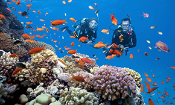

Con Dao consists of different sub-islands such as Hon Bay Canh, Hon Tai, Hon Tre, Hon Egg, Hon Trac or Hon Cau … is the convergence of coral reefs with the highest density in Vietnam. The ideal place to explore the amazing ocean world. At the diving sites that have been pre-explored. Visitors will be guided to basic manoeuvres and diving with the instructor.
Con Son Bay consists of a system of 14 different small and small islands with a chain of Tai, Trac, Rabbit, … gathered like a big family and Hon Bay Canh, Bong Lan, Hon Cau, Hon Egg, Hon Tre … majestic in the middle of the sea. All the islands that create a poetic beauty for Con Son Bay and is a marine ecological reserve with coral reefs that are nowhere to match in density and type.
Travelling to Con Dao, you can experience a quiet but extremely charming night on Bay Canh Island. You will see firsthand the sea turtles of Chelonia mydas that folk call green turtles or turtles … make nests and lay eggs on the coast. And some other attractions in Con Dao such as Dam Trau beach, seven-sided island, hot spring beach, con island national park, con island prison, …